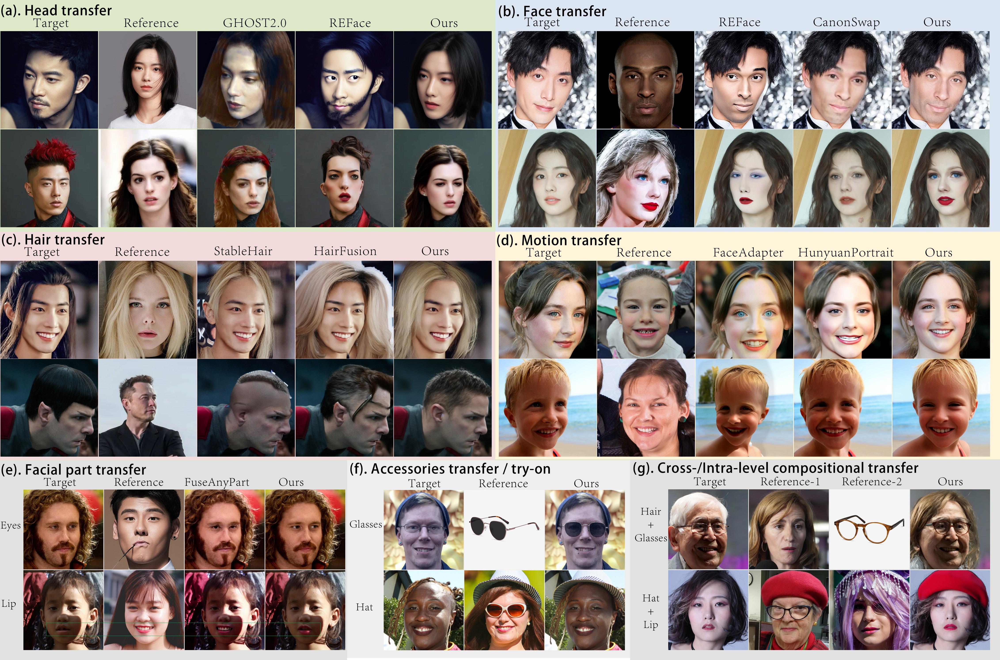
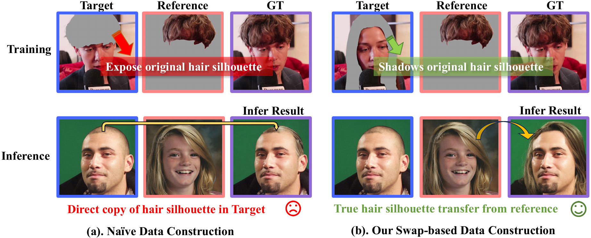
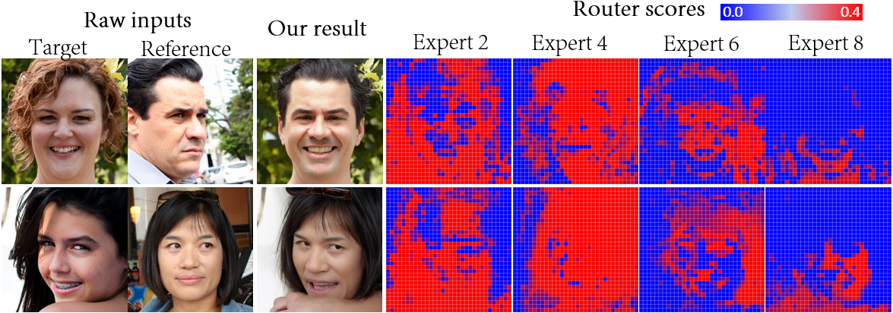
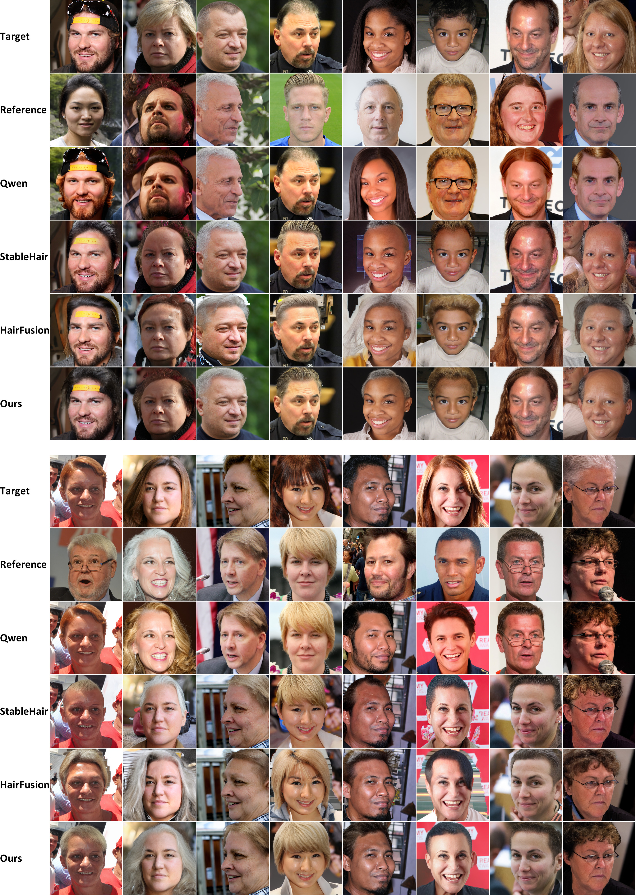
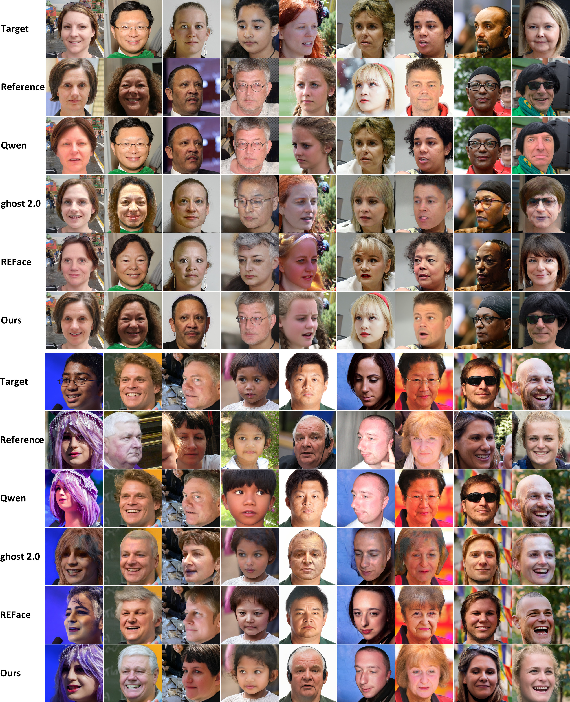
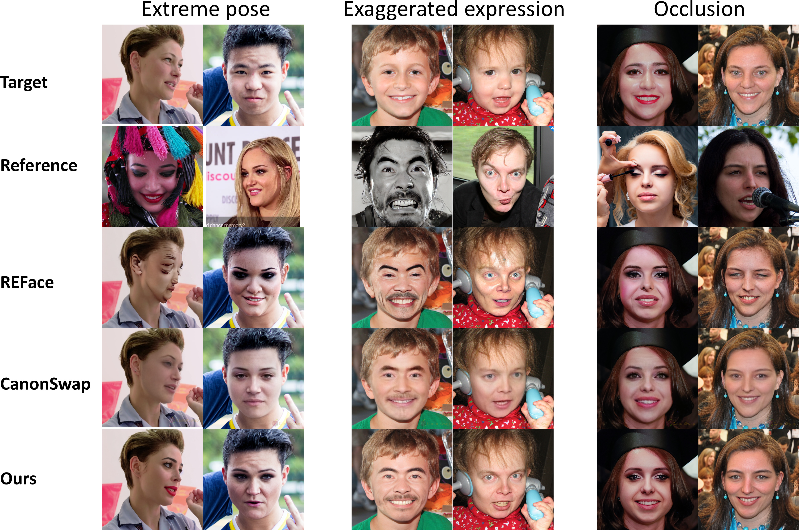
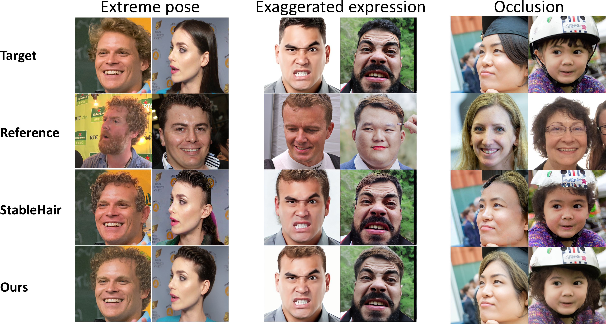
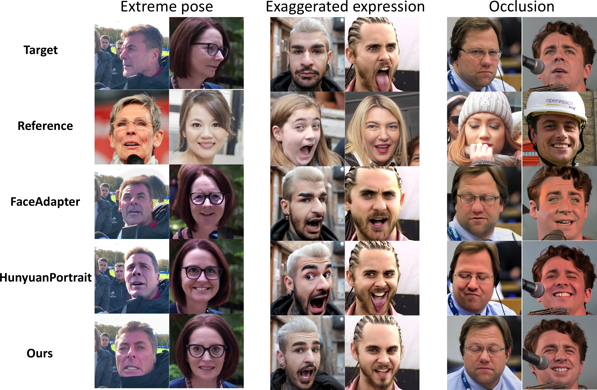
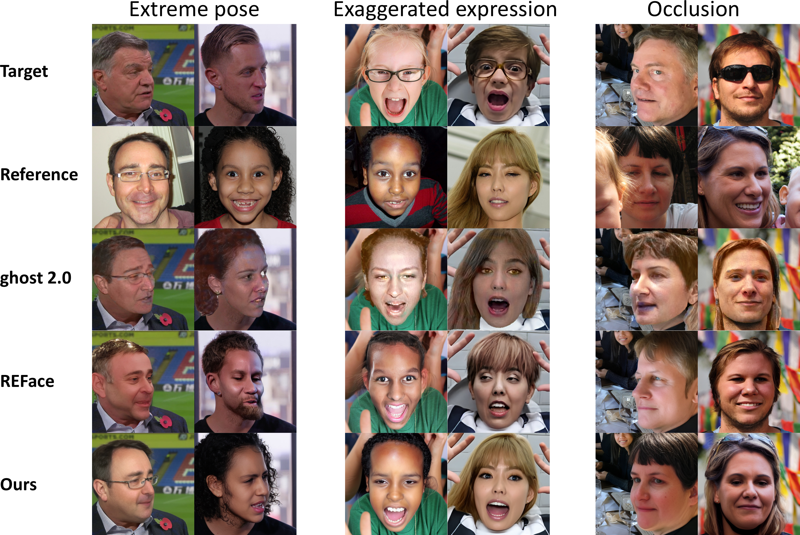

UniBioTransfer: A Unified Framework for Multiple Biometrics Transfer
Abstract
Deepface generation has traditionally followed a task-driven paradigm, where distinct tasks (e.g., face transfer and hair transfer) are addressed by task-specific models. Nevertheless, this single-task setting severely limits model generalization and scalability. A unified model capable of solving multiple deepface generation tasks in a single pass represents a promising and practical direction, yet remains challenging due to data scarcity and cross-task conflicts arising from heterogeneous attribute transformations. To this end, we propose UniBioTransfer, the first unified framework capable of handling both conventional deepface tasks (e.g., face transfer and face reenactment) and shape-varying transformations (e.g., hair transfer and head transfer). Besides, UniBioTransfer naturally generalizes to unseen tasks, like lip, eye, and glasses transfer, with minimal fine-tuning. Generally, UniBioTransfer addresses data insufficiency in multi-task generation through a unified data construction strategy, including a swapping-based corruption mechanism designed for spatially dynamic attributes like hair. It further mitigates cross-task interference via an innovative BioMoE, a mixture-of-experts based model coupled with a novel two-stage training strategy that effectively disentangles task-specific knowledge. Extensive experiments demonstrate the effectiveness, generalization, and scalability of UniBioTransfer, outperforming both existing unified models and task-specific methods across a wide range of deepface generation tasks. Our code will be released soon.
Visual Results

Problem Definition
We formulate various deepface tasks as swapping a set of attributes X (e.g., face identity, hair, pose, expression, skin tone) from a reference image Iref onto a target image Itgt, while preserving the remaining attributes Y from Itgt. The desired output is Iout = Xref ∪ Ytgt.
Method

Limitations of traditional mask-based strategy for attributes with significant structural changes (e.g., hair transfer). Masking exposes ground-truth geometry (a-top), so models trained on such pairs only learn to inpaint the masked region at inference (a-bottom), instead of performing true shape transfer. Our swapping-based strategy removes silhouette information in the target (b-top), forcing the network to transfer shape from the reference at inference (b-bottom).

Our unified data corruption strategy for different attribute types. (a) Relative-static attributes: the target is constructed by simple masking or data augmentation of the GT image. (b) Spatially-dynamic attributes: we utilize our swapping-based corruption strategy, which employs an off-the-shelf generative model to replace specific attributes in the GT with arbitrary novel variations, preventing shape leakage from mask boundaries.

UniBioTransfer architecture overview. (a) Overall framework. (b) We introduce an MoE-enhanced Feed Forward Network (FFN). (c) Expert selection is guided by a Structure-Aware Router. (d) The entire system is optimized using a two-stage training strategy designed to stabilize routing and promote expert specialization.

Structure-aware routing scores after softmax and before top-K selection, visualizing how experts specialize to semantically structured regions.
Additional Visual Results
All inputs are from the FFHQ dataset.

Face transfer

Hair transfer

Motion transfer

Head transfer
Complex Scenes (Extreme Poses, Expressions, Occlusions)
We manually select occlusion images from FFHQ dataset, exaggerated expressions from AffectNet dataset, and extreme poses from EFHQ dataset.
In each case, either the target or the reference image features a complex scene, while the other is a normal image from the FFHQ test set.

Face transfer

Hair transfer

Motion transfer (face reenactment)

Head transfer
BibTeX
PLACE_holder